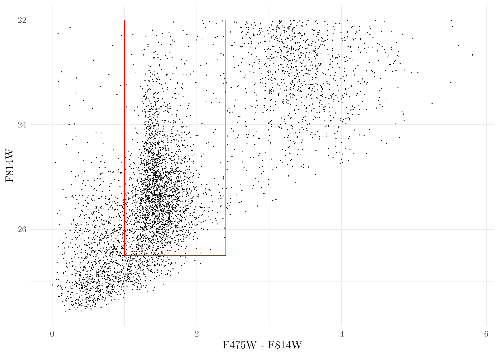

Last updated: 2024-07-06
Checks: 7 0
Knit directory: MATHPOP/
This reproducible R Markdown analysis was created with workflowr (version 1.7.1). The Checks tab describes the reproducibility checks that were applied when the results were created. The Past versions tab lists the development history.
Great! Since the R Markdown file has been committed to the Git repository, you know the exact version of the code that produced these results.
Great job! The global environment was empty. Objects defined in the global environment can affect the analysis in your R Markdown file in unknown ways. For reproduciblity it’s best to always run the code in an empty environment.
The command set.seed(20240702) was run prior to running
the code in the R Markdown file. Setting a seed ensures that any results
that rely on randomness, e.g. subsampling or permutations, are
reproducible.
Great job! Recording the operating system, R version, and package versions is critical for reproducibility.
Nice! There were no cached chunks for this analysis, so you can be confident that you successfully produced the results during this run.
Great job! Using relative paths to the files within your workflowr project makes it easier to run your code on other machines.
Great! You are using Git for version control. Tracking code development and connecting the code version to the results is critical for reproducibility.
The results in this page were generated with repository version a38fbed. See the Past versions tab to see a history of the changes made to the R Markdown and HTML files.
Note that you need to be careful to ensure that all relevant files for
the analysis have been committed to Git prior to generating the results
(you can use wflow_publish or
wflow_git_commit). workflowr only checks the R Markdown
file, but you know if there are other scripts or data files that it
depends on. Below is the status of the Git repository when the results
were generated:
Ignored files:
Ignored: .DS_Store
Ignored: analysis/.DS_Store
Ignored: data/.DS_Store
Ignored: data/GC_prob/.DS_Store
Ignored: data/point_source_data/.DS_Store
Ignored: data/prob_GC_data/.DS_Store
Ignored: data/sim/.DS_Store
Ignored: data/v10acs/.DS_Store
Ignored: data/v10wfc3/.DS_Store
Ignored: data/v11acs/.DS_Store
Ignored: data/v11wfc3/.DS_Store
Ignored: data/v12acs/.DS_Store
Ignored: data/v12wfc3/.DS_Store
Ignored: data/v13acs/.DS_Store
Ignored: data/v13wfc3/.DS_Store
Ignored: data/v14acs/.DS_Store
Ignored: data/v14wfc3/.DS_Store
Ignored: data/v15acs/.DS_Store
Ignored: data/v15wfc3/.DS_Store
Ignored: data/v6acs/.DS_Store
Ignored: data/v6wfc3/.DS_Store
Ignored: data/v7acs/.DS_Store
Ignored: data/v8acs/.DS_Store
Ignored: data/v9acs/.DS_Store
Ignored: data/v9wfc3/.DS_Store
Unstaged changes:
Modified: analysis/_site.yml
Note that any generated files, e.g. HTML, png, CSS, etc., are not included in this status report because it is ok for generated content to have uncommitted changes.
These are the previous versions of the repository in which changes were
made to the R Markdown (analysis/GC_prob.Rmd) and HTML
(docs/GC_prob.html) files. If you’ve configured a remote
Git repository (see ?wflow_git_remote), click on the
hyperlinks in the table below to view the files as they were in that
past version.
| File | Version | Author | Date | Message |
|---|---|---|---|---|
| html | 64686bd | david.li | 2024-07-06 | Build site. |
| html | 0a9d403 | david.li | 2024-07-05 | Build site. |
| html | c1fd386 | david.li | 2024-07-04 | Build site. |
| Rmd | 33fc566 | david.li | 2024-07-04 | wflow_git_commit(all = T) |
| html | 33fc566 | david.li | 2024-07-04 | wflow_git_commit(all = T) |
| html | 4740a15 | david.li | 2024-07-04 | Build site. |
| Rmd | 5c28f22 | david.li | 2024-07-04 | wflow_publish(c("analysis/GC_prob.Rmd")) |
| html | 0b819e1 | david.li | 2024-07-03 | Build site. |
| html | 44c0586 | david.li | 2024-07-03 | Build site. |
| Rmd | 2a6b77c | david.li | 2024-07-03 | wflow_publish("analysis/GC_prob.Rmd", republish = TRUE) |
| html | 345edbd | david.li | 2024-07-03 | Build site. |
| html | 957c2e2 | david.li | 2024-07-03 | Build site. |
| Rmd | 199856c | david.li | 2024-07-03 | wflow_publish(c("analysis/index.Rmd", "analysis/vignette.Rmd", |
This vignette introduces how you can construct a probabilistic GC catalog based on a catalog of point sources. The method illustrated here is the one used for obtaining the L24 GC catalog in the original Li et al. (2024) paper.
To start, we load the required packages:
library(tidyverse)
library(mixtools)We then read in the point source data. Note the point source data used here are obtained by running DOLPHOT for the science images on the PIPER survey.
fnames <- list.files('data/point_source_data/')
fnames <- fnames[!grepl('Jans', fnames)]
# extract all point source data file names for each imaging visit in the PIPER survey.
# read in all the point source data into one single data.frame
dat_DOL <- data.frame()
for (i in fnames) {
df <- read_csv(paste0('data/point_source_data/',i))
df <- bind_cols(df, field = rep(i, nrow(df)))
dat_DOL <- bind_rows(dat_DOL, df)
}
# NOTE: if you have all point source data in one single file, this chunk of code is not required.Plot the Color-Magnitude Diagram (CMD) of the point sources (red box is a typical selection region of GC candidates under a binary selection criteria) :
ggplot(dat_DOL, aes(F475W - F814W, F814W)) + geom_point(size = 0.05) + scale_y_reverse() +
annotate('segment', x = 1.0, xend = 2.4, y = 26.5, yend = 26.5, colour = 'red') +
annotate('segment', x = 1.0, xend = 1.0, y = 22, yend = 26.5, colour = 'red') +
annotate('segment', x = 2.4, xend = 2.4, y = 22, yend = 26.5, colour = 'red') +
annotate('segment', x = 1.0, xend = 2.4, y = 22, yend = 22, colour = 'red') +
theme_minimal()CMD of DOLPHOT sources.
Things look OK. Next, we conduct some initial preprocessing of the data, namely, we remove point sources with color \(\mathrm{F475W} - \mathrm{F814W} < 0.0~\mathrm{mag}\) and \(\mathrm{F814W} < 22.0~\mathrm{mag}\). These are intended to stabilize the finite-mixture model clustering later. The cut-off values here are relatively certain since sources removed are most certainly not GCs. Of course, the cut-off values for point sources can be adjusted and you can play around with it yourself.
CMD <- mutate(dat_DOL, C = F475W - F814W, M = F814W) %>%
dplyr::select(x, y, RA, DEC, C, M, field, F814W, F475W) %>%
filter(M > 22 & C > 0) %>% # remove sources with magnitude < 22 and color < 0.
mutate(err_F814W = 0.0884*exp(0.645*(F814W - 25.5))*(grepl('acs', field)) +
0.0977*exp(0.613*(F814W - 25.5))*grepl('wfc3', field), # measurement uncertainties for F814W
err_F475W = 0.078*exp(0.699*(F475W - 26))*(grepl('acs', field)) +
0.0544*exp(0.652*(F475W - 26))*grepl('wfc3', field)) %>% # measurement uncertainties for F475W
mutate(err_color = sqrt(err_F814W^2 + err_F475W^2)) # measurement uncertainties for colorsPlot the processed data again:
ggplot(CMD, aes(F475W - F814W, F814W)) + geom_point(size = 0.05) + scale_y_reverse() +
annotate('segment', x = 1.0, xend = 2.4, y = 26.5, yend = 26.5, colour = 'red') +
annotate('segment', x = 1.0, xend = 1.0, y = 22, yend = 26.5, colour = 'red') +
annotate('segment', x = 2.4, xend = 2.4, y = 22, yend = 26.5, colour = 'red') +
annotate('segment', x = 1.0, xend = 2.4, y = 22, yend = 22, colour = 'red') +
theme_minimal()
The clustering algorithm we use is a non-parametric finite-mixture
model by Benaglia
et al. (2009) and Chauveau
& Hoang (2016) implemented in the R package
mixtools.
In the following code, we run the finite-mixture model once with the color-magnitude data being jittered by the measurement uncertainties. Note that we need to specify how many clusters there are in the data. Naturally, based on what we know of a typical CMD, there should be three clusters.
class_res <- mixtools::mvnpEM(data.frame(C = rnorm(nrow(CMD), CMD$C, CMD$err_color),
M = rnorm(nrow(CMD), CMD$F814W, CMD$err_F814W)), # jitter the color-magnitude data
mu0 = 3, # three clusters
verb = F, samebw = F, maxit = 200)Get the probability that a source is a GC and plot it:
prob <- class_res$posterior[, which.max(class_res$lambdahat)] # lambdahat is a vector containing the proportion of the sources in each of the three cluster. In this dataset, the GC cluser has the highest proportion. If using other dataset, this has to be changed accordingly.
CMD$p <- prob # make a new column called 'p' for the CMD data to represent the probability
# plot it
ggplot(CMD, aes(C, M, color = p)) + geom_point(size = 0.1) +
scale_size_identity() +
scale_y_reverse() + theme_minimal() +
xlab('F475W - F814W') + ylab('F814W') +
scale_colour_viridis_c(name = '$p(\\mathrm{GC})$', limits = c(0,1)) +
annotate('segment', x = 1.0, xend = 2.4, y = 26.5, yend = 26.5, colour = 'red') +
annotate('segment', x = 1.0, xend = 1.0, y = 22, yend = 26.5, colour = 'red') +
annotate('segment', x = 2.4, xend = 2.4, y = 22, yend = 26.5, colour = 'red') +
annotate('segment', x = 1.0, xend = 2.4, y = 22, yend = 22, colour = 'red') Probability a source is a GC for DOLPHOT sources.
| Version | Author | Date |
|---|---|---|
| c1fd386 | david.li | 2024-07-04 |
Note that we here are only running the finite-mixture model once, but since we are considering measurement uncertainties as well, we will need to repeatedly fit the finite-mixture model multiple times with different realization of the jittering from the measurement uncertainty. In the original paper of Li et al. (2024), the finite-mixture model was run 500 times and the probabilities from each of these iterations were retained and stored in the dataset.
sessionInfo()R version 4.3.2 (2023-10-31)
Platform: aarch64-apple-darwin20 (64-bit)
Running under: macOS Sonoma 14.1.1
Matrix products: default
BLAS: /Library/Frameworks/R.framework/Versions/4.3-arm64/Resources/lib/libRblas.0.dylib
LAPACK: /Library/Frameworks/R.framework/Versions/4.3-arm64/Resources/lib/libRlapack.dylib; LAPACK version 3.11.0
locale:
[1] en_US.UTF-8/en_US.UTF-8/en_US.UTF-8/C/en_US.UTF-8/en_US.UTF-8
time zone: America/Toronto
tzcode source: internal
attached base packages:
[1] stats graphics grDevices utils datasets methods base
other attached packages:
[1] mixtools_2.0.0 lubridate_1.9.3 forcats_1.0.0 stringr_1.5.1
[5] dplyr_1.1.4 purrr_1.0.2 readr_2.1.4 tidyr_1.3.0
[9] tibble_3.2.1 ggplot2_3.4.4 tidyverse_2.0.0 workflowr_1.7.1
loaded via a namespace (and not attached):
[1] tidyselect_1.2.0 filehash_2.4-5 viridisLite_0.4.2 farver_2.1.1
[5] fastmap_1.2.0 lazyeval_0.2.2 promises_1.2.1 digest_0.6.36
[9] timechange_0.2.0 lifecycle_1.0.4 qpdf_1.3.3 survival_3.5-7
[13] processx_3.8.2 magrittr_2.0.3 kernlab_0.9-32 compiler_4.3.2
[17] rlang_1.1.4 sass_0.4.7 tools_4.3.2 utf8_1.2.4
[21] yaml_2.3.7 data.table_1.14.8 knitr_1.45 askpass_1.2.0
[25] labeling_0.4.3 htmlwidgets_1.6.2 bit_4.0.5 klippy_0.0.0.9500
[29] withr_2.5.2 grid_4.3.2 fansi_1.0.6 git2r_0.33.0
[33] colorspace_2.1-0 scales_1.3.0 MASS_7.3-60 tinytex_0.48
[37] cli_3.6.1 rmarkdown_2.25 crayon_1.5.2 generics_0.1.3
[41] rstudioapi_0.15.0 tikzDevice_0.12.5 httr_1.4.7 tzdb_0.4.0
[45] cachem_1.0.8 splines_4.3.2 assertthat_0.2.1 parallel_4.3.2
[49] vctrs_0.6.5 Matrix_1.6-3 jsonlite_1.8.7 callr_3.7.3
[53] hms_1.1.3 bit64_4.0.5 magick_2.8.3 plotly_4.10.3
[57] jquerylib_0.1.4 glue_1.6.2 ps_1.7.5 stringi_1.8.4
[61] gtable_0.3.4 later_1.3.1 munsell_0.5.0 pillar_1.9.0
[65] htmltools_0.5.8.1 R6_2.5.1 rprojroot_2.0.4 vroom_1.6.4
[69] evaluate_0.23 lattice_0.22-5 highr_0.10 png_0.1-8
[73] segmented_2.0-3 httpuv_1.6.12 bslib_0.5.1 Rcpp_1.0.11
[77] nlme_3.1-163 whisker_0.4.1 xfun_0.41 fs_1.6.3
[81] getPass_0.2-4 pkgconfig_2.0.3 pdftools_3.4.0